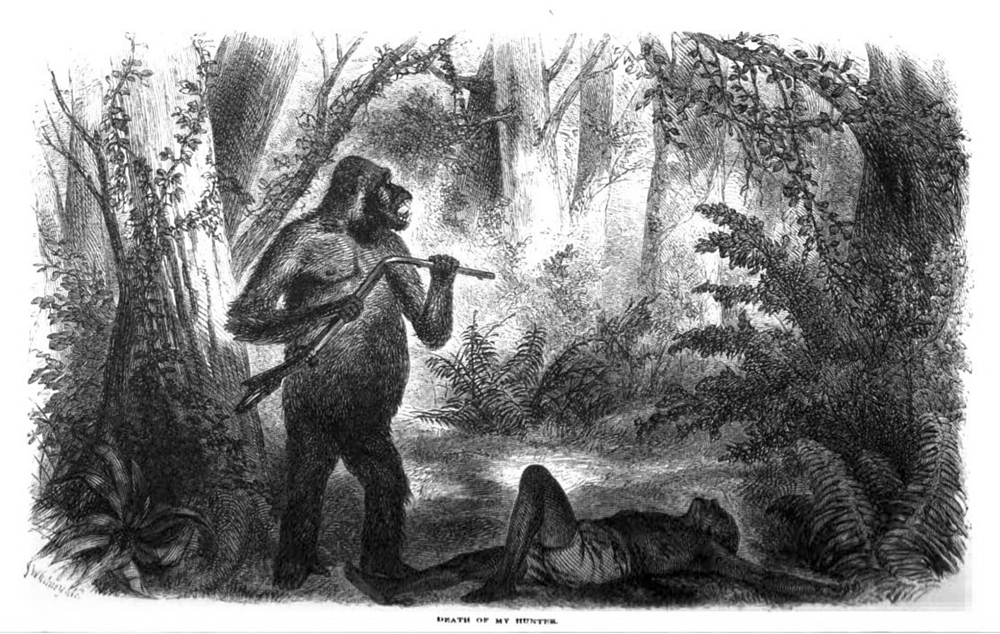

Hello HTML World
Soon you will ♥ HTML as much as I do!
Another paragraph here
And another!
I r e a l l y like WHITESPACE don't you?
What
about now?
This is fun isn't it?
Best day ever!
It complete is a great day for writing trashy HTML!
documentation!
This is an A (abbreviation)
contact me
challange: can you find the hidden link on the giraffe shown below?
fun fact: the average male gorilla weighs more than 100lbs!
below is what sound a gorilla makes:
*gorilla noises*
press me to delete system32
website
system.delete(system32)
average weight of gorilla
The Gorilla-
A giant owl-like creature.
Details
Gorillas are the largest creatures of all.
Click me, you won't regret it!
Gorillas are large, primarily herbivorous,[1] great apes that live in the tropical forests of equatorial Africa. The genus Gorilla is divided into two species: the eastern gorilla and the western gorilla, and either four or five subspecies. The DNA of gorillas is highly similar to that of humans, from 96 to 99% depending on what is included, and they are the next closest living relatives to humans after the bonobos and chimpanzees.
Gorillas are the largest living primates, reaching heights between 1.25 and 1.8 m (4 ft 1 in and 5 ft 11 in), weights between 100 and 270 kg (220 and 600 lb), and arm spans up to 2.6 m (8 ft 6 in), depending on species and sex. They tend to live in troops, with the leader being called a silverback. The eastern gorilla is distinguished from the western by darker fur colour and some other minor morphological differences. Gorillas tend to live 35–40 years in the wild.
Gorillas' natural habitats cover tropical or subtropical forests in Sub-Saharan Africa. Although their range covers a small percentage of Sub-Saharan Africa, gorillas cover a wide range of elevations. The mountain gorilla inhabits the Albertine Rift montane cloud forests of the Virunga Volcanoes, ranging in altitude from 2,200 to 4,300 m (7,200 to 14,100 ft). Lowland gorillas live in dense forests and lowland swamps and marshes as low as sea level, with western lowland gorillas living in Central West African countries and eastern lowland gorillas living in the Democratic Republic of the Congo near its border with Rwanda.
There are thought to be around 316,000 western gorillas in the wild, and 5,000 eastern gorillas. Both species are classified as Critically Endangered by the IUCN; all subspecies are classified as Critically Endangered with the exception of the mountain gorilla, which is classified as Endangered. There are many threats to their survival, such as poaching, habitat destruction, and disease, which threaten the survival of the species. However, conservation efforts have been successful in some areas where they live.
The word gorilla comes from the history of Hanno the Navigator (c. 500 BC), a Carthaginian explorer on an expedition to the west African coast to the area that later became Sierra Leone.[2][3] Members of the expedition encountered "savage people, the greater part of whom were women, whose bodies were hairy, and whom our interpreters called Gorillae".[4][5] It is unknown whether what the explorers encountered were what we now call gorillas, another species of ape or monkeys, or humans.[6] Skins of gorillai women, brought back by Hanno, are reputed to have been kept at Carthage until Rome destroyed the city 350 years later at the end of the Punic Wars, 146 BC.
In 1625 Andrew Battel mentioned the existence of the animal, under the name Pongo:
This Pongo is in all proportion like a man, but... he is more like a Giant in stature, than a man: for he is very tall, [and] hath a man's face, hollow-eyed, with long haire vpon his browes. His face and eares are without haire, and his hands also. His bodie is full of haire, but not very thicke, and it is a dunnish colour. . . Hee goeth alwaies vpon his legs, and carrieth his hands clasped on the nape of his necke, when he goeth upon the ground... They goe many together, and kill many Negroes that trauaile in the Woods . . . Those Pongos are neuer taken aliue, because they are so strong, that ten men cannot hold one of them...— Andrew Battel, 1625[7]
A century and a half after Battel's story was published, one writer called Radermacher wrote that "the large species, described by Buffon and other authors as of the size of a man, is held by many to be a Chimera."[8]
The American physician and missionary Thomas Staughton Savage and naturalist Jeffries Wyman first described the western gorilla in 1847 from specimens obtained in Liberia.[9] They called it Troglodytes gorilla, using the then-current name of the chimpanzee genus. The species name was derived from Ancient Greek Γόριλλαι (gorillai) 'name of a tribe of hairy women',[10] as described by Hanno.
----------------------------------
I confirm that I have read all of the gorilla information
Here is a gorilla in its natural habitat
_end of survey_
Thank you for your honesty.
your answers to the survey are probably being securely stored. please do not worry
please enjoy the newest version of minecraft
++ gaming skills leevl up ++
To continue with webpage, please read the following:
There are thought to be around 316,000 western gorillas in the wild, and 5,000 eastern gorillas.
why i like html
you
can
make
lists!
Save for later (recommended) Share this important news
page completion
at 50/100
current navigation:
base
animals
gorilla page
monkey1
monkey2
monkey3
gorilla
lemur
snake

- - - - - - - - - - - -
- - - - - - - - - - -
- - - - - - - - - - - -
- - - - - - - - - - -
- - - - - - - - - - - -
- - - - - - - - - - -
- - - - - - - - - - - -
- - - - - - - - - - -
- - - - - - - - - - - -
- - - - - - - - - - -
Welcome to the next section
Porgress through page:
In 1911, the anthropologist Albert Jenks noted the Bulu people's knowledge of gorilla behaviour and ecology, and their gorilla stories. In one such story, "The Gorilla and the Child", a gorilla speaks to people, seeking help and trust, and stealing a baby; a man accidentally kills the baby while attacking the gorilla.
漢漢漢漢字字字字 ( kan ) 字字字字 ( ji )
You're getting close to the end. keep going!
Click me to Dance
psst. psst. psst
this is myspan
this is some strong text
This has been within my top favorite labs so far
I have keys but no doors. I have space but no room. You can enter but can’t
leave. What am I?
A gorilla
this is a very tiny table
my
table
table
elbat
my
elbat
table
elbat
Thank you for reading my whole document professor! please watch this video I made as a reflection on this lab.